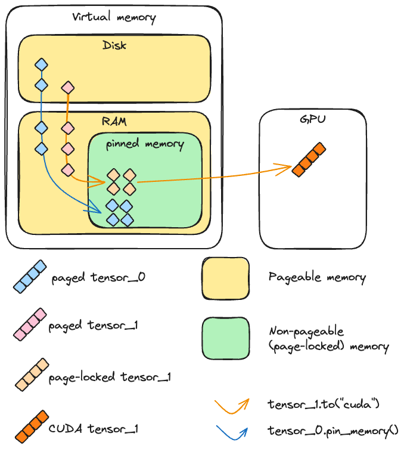
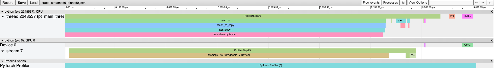
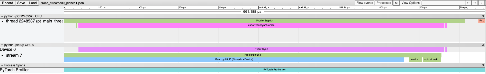
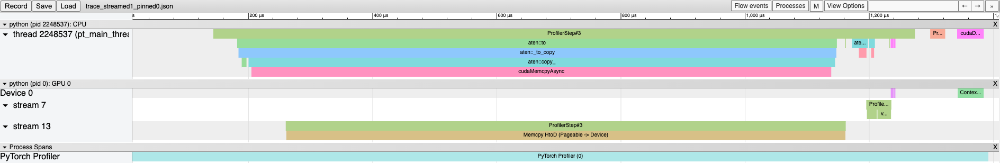
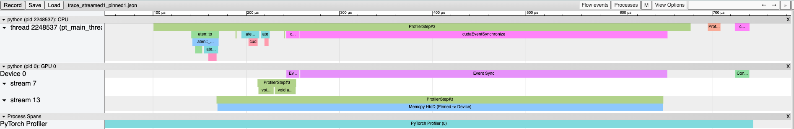

备注
点击 这里
下载完整示例代码
PyTorch 中正确使用非阻塞和固定内存的指南 ¶
创建时间：2025年4月1日 | 最后更新时间：2025年4月1日 | 最后验证时间：2024年11月5日
作者 : 文森特·莫恩斯
简介 ¶
在许多 PyTorch 应用中，将数据从 CPU 传输到 GPU 是基本操作。
对于用户来说，了解在设备间移动数据的最有效工具和选项至关重要。
本教程探讨了 PyTorch 中两种关键的设备间数据传输方法：
pin_memory() 和 to()，并使用 non_blocking=True 选项。
你将学习 ¶
通过异步传输和内存固定，可以优化张量从 CPU 到 GPU 的传输。然而，还有一些重要的考虑因素：
使用
tensor.pin_memory().to(device, non_blocking=True)可能比直接tensor.to(device)慢两倍。通常，
tensor.to(device, non_blocking=True)是提高传输速度的有效选择。
虽然cpu_tensor.to("cuda", non_blocking=True).mean()执行正确，但尝试cuda_tensor.to("cpu", non_blocking=True).mean()将导致错误输出。
前言 ¶
本教程中报告的性能取决于构建教程所使用的系统。尽管结论适用于不同的系统，但具体观察结果可能会因可用硬件而略有不同，尤其是在较旧的硬件上。本教程的主要目标是提供一个理论框架，以理解 CPU 到 GPU 的数据传输。然而，任何设计决策都应针对个别案例进行调整，并受基准吞吐量测量以及具体任务要求的指导。
import torch
assert torch.cuda.is_available(), "A cuda device is required to run this tutorial"
本教程需要安装 tensordict。如果您环境中还没有 tensordict，请在单独的单元中运行以下命令进行安装：
# Install tensordict with the following command
!pip3 install tensordict
我们首先概述这些概念的理论，然后转向具体的功能测试示例。
背景 ¶
内存管理基础 ¶
当在 PyTorch 中创建一个 CPU 张量时，该张量的内容需要放置在内存中。这里所说的内存是一个相当复杂的概念，值得仔细研究。我们区分两种由内存管理单元处理的内存类型：RAM（为了简单起见）和磁盘上的交换空间（这可能是硬盘）。磁盘和 RAM（物理内存）的可用地空间共同构成了虚拟内存，它是总可用资源的抽象。简而言之，虚拟内存使得可用空间大于单独的 RAM 所能提供的空间，并创造出主内存比实际更大的错觉。
在正常情况下，常规 CPU 张量是可分页的，这意味着它被分成称为页面的块，可以存在于虚拟内存的任何地方（既在 RAM 上也在磁盘上）。如前所述，这有一个优点，那就是内存看起来比主内存实际要大。
通常，当程序访问不在 RAM 中的页面时，会发生“页面错误”，然后操作系统（OS）将此页面带回 RAM（“交换入”或“页面入”）。反过来，操作系统可能需要交换出（或“页面出”）另一个页面来为新页面腾出空间。
与可分页内存相比，固定（或页面锁定或不可分页）内存是一种不能交换到磁盘的内存类型。它允许更快的访问时间和更可预测的访问时间，但缺点是它比可分页内存（即主内存）更有限。

CUDA 和（非）可分页内存
要了解 CUDA 如何将张量从 CPU 复制到 CUDA，让我们考虑上述两种情况：
如果内存是页面锁定状态，设备可以直接在主内存中访问内存。内存地址定义良好，需要读取这些数据的函数可以显著加速。
如果内存是可分页的，所有页面都必须先被载入主内存，然后才能发送到 GPU。这个操作可能需要时间，并且比在页面锁定张量上执行时更不可预测。
更精确地说，当 CUDA 从 CPU 向 GPU 发送可分页数据时，它必须首先创建该数据的页面锁定副本，然后再进行传输。
异步与同步操作（使用 non_blocking=True （CUDA cudaMemcpyAsync）¶）
当从主机（例如，CPU）向设备（例如，GPU）执行复制操作时，CUDA 工具包提供了同步或异步执行这些操作的方式，相对于主机而言。
在实际操作中，当调用 to() 时，PyTorch 总是调用
cudaMemcpyAsync。如果 non_blocking=False（默认），每次调用 cudaStreamSynchronize 后都会调用，使得对 to() 的调用在主线程中阻塞。如果 non_blocking=True，则不会触发同步，主机上的主线程不会被阻塞。因此，从主机角度来看，可以同时向设备发送多个张量，因为线程不需要等待一个传输完成就可以启动另一个传输。
备注
通常情况下，传输在设备端是阻塞的（即使主机端不是）：在执行另一个操作时，设备上的复制无法发生。然而，在某些高级场景中，GPU 端可以同时进行复制和内核执行。以下示例将展示，要启用此功能，必须满足以下三个要求：
设备必须至少有一个空闲的 DMA（直接内存访问）引擎。现代 GPU 架构，如 Volterra、Tesla 或 H100 设备，拥有多个 DMA 引擎。
传输必须在单独的非默认 cuda 流上完成。在 PyTorch 中，可以使用以下方式处理 cuda 流：Stream。源数据必须位于固定内存中。
我们通过在以下脚本上运行配置文件来演示这一点。
import contextlib
from torch.cuda import Stream
s = Stream()
torch.manual_seed(42)
t1_cpu_pinned = torch.randn(1024**2 * 5, pin_memory=True)
t2_cpu_paged = torch.randn(1024**2 * 5, pin_memory=False)
t3_cuda = torch.randn(1024**2 * 5, device="cuda:0")
assert torch.cuda.is_available()
device = torch.device("cuda", torch.cuda.current_device())
# The function we want to profile
def inner(pinned: bool, streamed: bool):
with torch.cuda.stream(s) if streamed else contextlib.nullcontext():
if pinned:
t1_cuda = t1_cpu_pinned.to(device, non_blocking=True)
else:
t2_cuda = t2_cpu_paged.to(device, non_blocking=True)
t_star_cuda_h2d_event = s.record_event()
# This operation can be executed during the CPU to GPU copy if and only if the tensor is pinned and the copy is
# done in the other stream
t3_cuda_mul = t3_cuda * t3_cuda * t3_cuda
t3_cuda_h2d_event = torch.cuda.current_stream().record_event()
t_star_cuda_h2d_event.synchronize()
t3_cuda_h2d_event.synchronize()
# Our profiler: profiles the `inner` function and stores the results in a .json file
def benchmark_with_profiler(
pinned,
streamed,
) -> None:
torch._C._profiler._set_cuda_sync_enabled_val(True)
wait, warmup, active = 1, 1, 2
num_steps = wait + warmup + active
rank = 0
with torch.profiler.profile(
activities=[
torch.profiler.ProfilerActivity.CPU,
torch.profiler.ProfilerActivity.CUDA,
],
schedule=torch.profiler.schedule(
wait=wait, warmup=warmup, active=active, repeat=1, skip_first=1
),
) as prof:
for step_idx in range(1, num_steps + 1):
inner(streamed=streamed, pinned=pinned)
if rank is None or rank == 0:
prof.step()
prof.export_chrome_trace(f"trace_streamed{int(streamed)}_pinned{int(pinned)}.json")
在 chrome 中（chrome://tracing）加载这些配置文件跟踪结果如下：首先，让我们看看如果对 t3_cuda 的算术运算在将可分页张量发送到主流 GPU 之后执行会发生什么：
benchmark_with_profiler(streamed=False, pinned=False)

使用固定张量并不会对跟踪结果产生太大影响，两个操作仍然连续执行：
benchmark_with_profiler(streamed=False, pinned=True)

将可分页的 tensor 发送到 GPU 上的单独流也是一个阻塞操作：
benchmark_with_profiler(streamed=True, pinned=False)

只有固定内存的 tensor 在单独的流上复制到 GPU 时，才会与主流上执行的另一个 cuda 内核重叠：
benchmark_with_profiler(streamed=True, pinned=True)

PyTorch 视角 ¶
pin_memory()¶
PyTorch 提供了创建并发送张量到页锁定内存的可能性
通过 pin_memory() 方法和构造函数参数。在 CUDA 已初始化的机器上，CPU 张量可以通过 pin_memory() 方法转换为页锁定内存。
重要的是，pin_memory 会在主机的主线程上阻塞：它将在将张量复制到页锁定内存之前等待，然后执行下一个操作。可以使用 zeros()、ones() 和其他构造函数直接在页锁定内存中创建新张量。
让我们检查页锁定内存和将张量发送到 CUDA 的速度：
import torch
import gc
from torch.utils.benchmark import Timer
import matplotlib.pyplot as plt
def timer(cmd):
median = (
Timer(cmd, globals=globals())
.adaptive_autorange(min_run_time=1.0, max_run_time=20.0)
.median
* 1000
)
print(f"{cmd}: {median: 4.4f} ms")
return median
# A tensor in pageable memory
pageable_tensor = torch.randn(1_000_000)
# A tensor in page-locked (pinned) memory
pinned_tensor = torch.randn(1_000_000, pin_memory=True)
# Runtimes:
pageable_to_device = timer("pageable_tensor.to('cuda:0')")
pinned_to_device = timer("pinned_tensor.to('cuda:0')")
pin_mem = timer("pageable_tensor.pin_memory()")
pin_mem_to_device = timer("pageable_tensor.pin_memory().to('cuda:0')")
# Ratios:
r1 = pinned_to_device / pageable_to_device
r2 = pin_mem_to_device / pageable_to_device
# Create a figure with the results
fig, ax = plt.subplots()
xlabels = [0, 1, 2]
bar_labels = [
"pageable_tensor.to(device) (1x)",
f"pinned_tensor.to(device) ({r1:4.2f}x)",
f"pageable_tensor.pin_memory().to(device) ({r2:4.2f}x)"
f"\npin_memory()={100*pin_mem/pin_mem_to_device:.2f}% of runtime.",
]
values = [pageable_to_device, pinned_to_device, pin_mem_to_device]
colors = ["tab:blue", "tab:red", "tab:orange"]
ax.bar(xlabels, values, label=bar_labels, color=colors)
ax.set_ylabel("Runtime (ms)")
ax.set_title("Device casting runtime (pin-memory)")
ax.set_xticks([])
ax.legend()
plt.show()
# Clear tensors
del pageable_tensor, pinned_tensor
_ = gc.collect()
我们可以观察到，将固定内存张量转换为 GPU 确实比可分页张量快得多，因为底层，可分页张量必须在发送到 GPU 之前被复制到固定内存中。
然而，与一种普遍的看法相反，在将可分页张量转换为 GPU 之前调用 pin_memory() 并不会带来任何显著的加速，相反，这个调用通常比仅仅执行传输要慢。这很有道理，因为我们实际上是在要求 Python 执行 CUDA 在将数据从主机复制到设备之前就会执行的操作。
备注
PyTorch 的
pin_memory
通过 cudaHostAlloc 创建一个新的品牌存储，这依赖于
在罕见情况下，可能比 cudaMemcpy 分块传输数据更快。这里，观察结果也可能因可用硬件、发送的张量大小或可用 RAM 量而异。
non_blocking=True¶
如前所述，许多 PyTorch 操作可以通过 non_blocking 参数选择以异步方式相对于主机执行。
这里，为了准确计算使用非阻塞的好处，我们将设计一个稍微复杂一些的
实验，因为我们想评估在有和没有调用的情况下，发送多个张量到 GPU 的速度有多快
非阻塞 .
# A simple loop that copies all tensors to cuda
def copy_to_device(*tensors):
result = []
for tensor in tensors:
result.append(tensor.to("cuda:0"))
return result
# A loop that copies all tensors to cuda asynchronously
def copy_to_device_nonblocking(*tensors):
result = []
for tensor in tensors:
result.append(tensor.to("cuda:0", non_blocking=True))
# We need to synchronize
torch.cuda.synchronize()
return result
# Create a list of tensors
tensors = [torch.randn(1000) for _ in range(1000)]
to_device = timer("copy_to_device(*tensors)")
to_device_nonblocking = timer("copy_to_device_nonblocking(*tensors)")
# Ratio
r1 = to_device_nonblocking / to_device
# Plot the results
fig, ax = plt.subplots()
xlabels = [0, 1]
bar_labels = [f"to(device) (1x)", f"to(device, non_blocking=True) ({r1:4.2f}x)"]
colors = ["tab:blue", "tab:red"]
values = [to_device, to_device_nonblocking]
ax.bar(xlabels, values, label=bar_labels, color=colors)
ax.set_ylabel("Runtime (ms)")
ax.set_title("Device casting runtime (non-blocking)")
ax.set_xticks([])
ax.legend()
plt.show()
为了更好地了解这里发生的情况，让我们分析这两个函数：
首先让我们看看带有常规 to(device) 的调用栈：
print("Call to `to(device)`", profile_mem("copy_to_device(*tensors)"))
现在看看 non_blocking 版本：
print(
"Call to `to(device, non_blocking=True)`",
profile_mem("copy_to_device_nonblocking(*tensors)"),
)
使用 non_blocking=True 时，结果无疑更好，因为所有传输都在主机端同时启动，并且只进行一次同步。
利益将根据张量的数量和大小以及所使用的硬件而变化。
备注
有趣的是，阻塞的 to("cuda") 实际上执行与带有 non_blocking=True 的相同异步设备转换操作 (cudaMemcpyAsync)，在每个复制后都有一个同步点。
协同效应 ¶
既然我们已经指出，将已在固定内存中的张量传输到 GPU 的速度比从可分页内存中传输更快，并且我们知道异步执行这些传输也比同步执行更快，我们可以对这些方法的组合进行基准测试。首先，让我们编写一些新的函数，这些函数将调用每个张量的 pin_memory
和 to(device)：
def pin_copy_to_device(*tensors):
result = []
for tensor in tensors:
result.append(tensor.pin_memory().to("cuda:0"))
return result
def pin_copy_to_device_nonblocking(*tensors):
result = []
for tensor in tensors:
result.append(tensor.pin_memory().to("cuda:0", non_blocking=True))
# We need to synchronize
torch.cuda.synchronize()
return result
使用 pin_memory() 的好处在处理较大批量的大型张量时更为明显：
tensors = [torch.randn(1_000_000) for _ in range(1000)]
page_copy = timer("copy_to_device(*tensors)")
page_copy_nb = timer("copy_to_device_nonblocking(*tensors)")
tensors_pinned = [torch.randn(1_000_000, pin_memory=True) for _ in range(1000)]
pinned_copy = timer("copy_to_device(*tensors_pinned)")
pinned_copy_nb = timer("copy_to_device_nonblocking(*tensors_pinned)")
pin_and_copy = timer("pin_copy_to_device(*tensors)")
pin_and_copy_nb = timer("pin_copy_to_device_nonblocking(*tensors)")
# Plot
strategies = ("pageable copy", "pinned copy", "pin and copy")
blocking = {
"blocking": [page_copy, pinned_copy, pin_and_copy],
"non-blocking": [page_copy_nb, pinned_copy_nb, pin_and_copy_nb],
}
x = torch.arange(3)
width = 0.25
multiplier = 0
fig, ax = plt.subplots(layout="constrained")
for attribute, runtimes in blocking.items():
offset = width * multiplier
rects = ax.bar(x + offset, runtimes, width, label=attribute)
ax.bar_label(rects, padding=3, fmt="%.2f")
multiplier += 1
# Add some text for labels, title and custom x-axis tick labels, etc.
ax.set_ylabel("Runtime (ms)")
ax.set_title("Runtime (pin-mem and non-blocking)")
ax.set_xticks([0, 1, 2])
ax.set_xticklabels(strategies)
plt.setp(ax.get_xticklabels(), rotation=45, ha="right", rotation_mode="anchor")
ax.legend(loc="upper left", ncols=3)
plt.show()
del tensors, tensors_pinned
_ = gc.collect()
其他复制方向（GPU -> CPU，CPU -> MPS）¶
迄今为止，我们一直假设从 CPU 到 GPU 的异步复制是安全的。这通常是正确的，因为 CUDA 会自动处理同步以确保在读取数据时数据是有效的 __无论张量处于可分页内存 状态__。
然而，在其他情况下，我们不能做出同样的假设：当一个张量被放置在固定内存中时，在调用主机到设备传输之后修改原始副本可能会损坏 GPU 上接收到的数据。同样，当在相反方向上完成传输，即从 GPU 到 CPU，或者从任何不是 CPU 或 GPU 的设备到任何不是 CUDA 处理的 GPU（例如，MPS）的设备时，没有保证 GPU 上读取的数据是有效的，除非进行显式同步。
在这些场景中，这些传输并不能保证在数据访问时副本是完整的。因此，主机上的数据可能是不完整或错误的，实际上变成了垃圾。
让我们先通过一个固定内存的张量来演示这一点：
DELAY = 100000000
try:
i = -1
for i in range(100):
# Create a tensor in pin-memory
cpu_tensor = torch.ones(1024, 1024, pin_memory=True)
torch.cuda.synchronize()
# Send the tensor to CUDA
cuda_tensor = cpu_tensor.to("cuda", non_blocking=True)
torch.cuda._sleep(DELAY)
# Corrupt the original tensor
cpu_tensor.zero_()
assert (cuda_tensor == 1).all()
print("No test failed with non_blocking and pinned tensor")
except AssertionError:
print(f"{i}th test failed with non_blocking and pinned tensor. Skipping remaining tests")
使用可分页的张量总是可行的：
i = -1
for i in range(100):
# Create a tensor in pageable memory
cpu_tensor = torch.ones(1024, 1024)
torch.cuda.synchronize()
# Send the tensor to CUDA
cuda_tensor = cpu_tensor.to("cuda", non_blocking=True)
torch.cuda._sleep(DELAY)
# Corrupt the original tensor
cpu_tensor.zero_()
assert (cuda_tensor == 1).all()
print("No test failed with non_blocking and pageable tensor")
现在我们来演示一下，没有同步，CUDA 到 CPU 也无法产生可靠的输出：
tensor = (
torch.arange(1, 1_000_000, dtype=torch.double, device="cuda")
.expand(100, 999999)
.clone()
)
torch.testing.assert_close(
tensor.mean(), torch.tensor(500_000, dtype=torch.double, device="cuda")
), tensor.mean()
try:
i = -1
for i in range(100):
cpu_tensor = tensor.to("cpu", non_blocking=True)
torch.testing.assert_close(
cpu_tensor.mean(), torch.tensor(500_000, dtype=torch.double)
)
print("No test failed with non_blocking")
except AssertionError:
print(f"{i}th test failed with non_blocking. Skipping remaining tests")
try:
i = -1
for i in range(100):
cpu_tensor = tensor.to("cpu", non_blocking=True)
torch.cuda.synchronize()
torch.testing.assert_close(
cpu_tensor.mean(), torch.tensor(500_000, dtype=torch.double)
)
print("No test failed with synchronize")
except AssertionError:
print(f"One test failed with synchronize: {i}th assertion!")
通常情况下，当目标设备是 CUDA 启用设备且原始张量在可分页内存中时，异步复制到设备是安全的，无需显式同步。
总结来说，当使用 non_blocking=True 时，从 CPU 复制数据到 GPU 是安全的，但对于任何其他方向，
non_blocking=True 仍然可以使用，但用户必须确保在访问数据之前执行设备同步。
实践建议 ¶
我们现在可以根据我们的观察提出一些初步建议：
通常情况下，non_blocking=True 将提供良好的吞吐量，无论原始张量是否已在固定内存中。如果张量已在固定内存中，传输可以加速，但从 Python 主线程手动将其发送到固定内存是一个在主机上的阻塞操作，因此会抵消使用 non_blocking=True（因为 CUDA 无论如何都会执行 pin_memory 传输）的大部分好处。
人们现在可能会合法地询问 pin_memory() 方法有什么用途。在下一节中，我们将进一步探讨如何使用它来进一步加速数据传输。
其他考虑事项 ¶
PyTorch 臭名昭著地提供了一个 数据加载器 类，其构造函数接受一个
固定内存 参数。考虑到我们之前关于 固定内存 的讨论，你可能会想知道如果内存固定本身是阻塞的，那么 数据加载器 是如何加速数据传输的。
关键在于数据加载器使用一个单独的线程来处理数据从可分页内存到固定内存的传输，从而防止主线程阻塞。
为了说明这一点，我们将使用同名的库中的 TensorDict 原语。当调用 to() 时，默认行为是将张量异步发送到设备，之后通过调用 torch.device.synchronize() 进行同步。
此外，TensorDict.to() 包含一个 non_blocking_pin 选项，该选项会启动多个线程来执行
在进行 to(device) 操作之前，先执行 pin_memory()。这种方法可以进一步加速数据传输，如下例所示。
from tensordict import TensorDict
import torch
from torch.utils.benchmark import Timer
import matplotlib.pyplot as plt
# Create the dataset
td = TensorDict({str(i): torch.randn(1_000_000) for i in range(1000)})
# Runtimes
copy_blocking = timer("td.to('cuda:0', non_blocking=False)")
copy_non_blocking = timer("td.to('cuda:0')")
copy_pin_nb = timer("td.to('cuda:0', non_blocking_pin=True, num_threads=0)")
copy_pin_multithread_nb = timer("td.to('cuda:0', non_blocking_pin=True, num_threads=4)")
# Rations
r1 = copy_non_blocking / copy_blocking
r2 = copy_pin_nb / copy_blocking
r3 = copy_pin_multithread_nb / copy_blocking
# Figure
fig, ax = plt.subplots()
xlabels = [0, 1, 2, 3]
bar_labels = [
"Blocking copy (1x)",
f"Non-blocking copy ({r1:4.2f}x)",
f"Blocking pin, non-blocking copy ({r2:4.2f}x)",
f"Non-blocking pin, non-blocking copy ({r3:4.2f}x)",
]
values = [copy_blocking, copy_non_blocking, copy_pin_nb, copy_pin_multithread_nb]
colors = ["tab:blue", "tab:red", "tab:orange", "tab:green"]
ax.bar(xlabels, values, label=bar_labels, color=colors)
ax.set_ylabel("Runtime (ms)")
ax.set_title("Device casting runtime")
ax.set_xticks([])
ax.legend()
plt.show()
在这个例子中，我们正在将许多大型张量从 CPU 传输到 GPU。这种场景非常适合使用多线程的 pin_memory()，这可以显著提高性能。然而，如果张量很小，多线程带来的开销可能会超过其带来的好处。同样，如果有很少的张量，将张量固定在单独的线程上的优势也会变得有限。
另外值得一提的是，虽然创建永久缓冲区在固定内存中，以便在将张量传输到 GPU 之前从可分页内存中传输张量可能看起来有利，但这种策略并不一定能加快计算速度。将数据复制到固定内存中的固有瓶颈仍然是限制因素。
此外，将存储在磁盘上的数据（无论是在共享内存中还是文件中）传输到 GPU 通常需要一个中间步骤，即将数据复制到固定内存（位于 RAM 中）。在这种情况下使用 non_blocking 进行大数据传输可以显著增加 RAM 消耗，可能产生不利影响。
实际上，没有一种适合所有情况的解决方案。使用多线程 pin_memory 与 non_blocking 传输的有效性取决于多种因素，包括特定系统、操作系统、硬件以及执行的任务性质。以下是在尝试加速 CPU 和 GPU 之间的数据传输或比较不同场景的吞吐量时需要检查的因素列表：
可用核心数
有多少 CPU 核心可用？系统是否与其他用户或进程共享，这些用户或进程可能会竞争资源？
核心利用率
CPU 核心是否被其他进程高度占用？应用程序是否在数据传输的同时执行其他 CPU 密集型任务？
内存利用率
当前使用了多少可分页和页锁定内存？是否有足够的空闲内存进行分配 不影响系统性能的情况下增加固定内存？请记住，没有免费的午餐，例如pin_memory将消耗 RAM，可能会影响其他任务。CUDA 设备功能
GPU 是否支持多个 DMA 引擎以进行并发数据传输？所使用的 CUDA 设备的具体功能和限制是什么？
要发送的张量数量
在典型操作中传输了多少个张量？
要发送的张量大小
正在传输的张量大小是多少？几个大张量或许多小张量可能不会从相同的传输程序中受益。
系统架构
系统的架构是如何影响数据传输速度的（例如，总线速度、网络延迟）？
此外，在固定内存中分配大量张量或大张量可能会占用大量 RAM。这会减少其他关键操作（如分页）可用的内存，从而可能对算法的整体性能产生负面影响。
结论 ¶
在本教程中，我们探讨了影响从主机到设备发送张量时的传输速度和内存管理的几个关键因素。我们了解到，使用 non_blocking=True 通常可以加速数据传输，并且如果正确实现，pin_memory() 也可以提高性能。然而，这些技术需要仔细设计和校准才能有效。
记住，对代码进行性能分析并关注内存消耗是优化资源使用和实现最佳性能的关键。